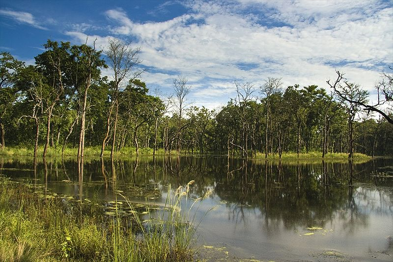

NEPAL NATIONAL PARK
|  | |||||
Nepal National ParkNepal National Park is the first national park in Nepal. It was established in 1973 and granted the status of a World Heritage Site in 1984. It covers an area of 952.63 km2 (367.81 sq mi) and is located in the subtropical Inner Terai lowlands of south-central Nepal in the districts of Nawalpur, Parsa, Chitwan and Makwanpur. In altitude it ranges from about 100 m (330 ft) in the river valleys to 815 m (2,674 ft) in the Churia Hills. Nepal National park,In the north and west of the protected area the Narayani-Rapti river system forms a natural boundary to human settlements. Adjacent to the east of Chitwan National Park is Parsa National Park, contiguous in the south is the Indian Tiger Reserve Valmiki National Park. The coherent protected area of 2,075 km2 (801 sq mi) represents the Tiger Conservation Unit (TCU) Chitwan-Parsa-Valmiki, which covers a 3,549 km2 (1,370 sq mi) huge block of alluvial grasslands and subtropical moist deciduous forests. Nepal is also counted as the famous heritage site because of the pictorial ruins that dot the wildlife park. Certainly, a visit to Nepal National Park is a treat for every wildlife and nature lover. The time spend on watching tigers roaming around, verdant greenery, a gamut of other species of chirpy birds and animals is priceless and worth enough to be explored at least once in a life. | |||||
|
|
|||||